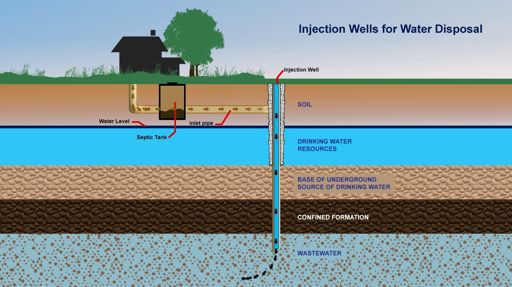
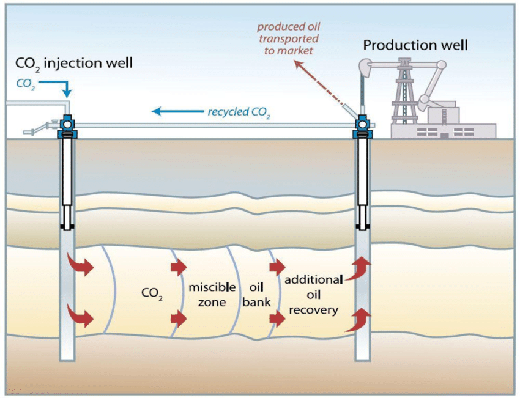

Injection Well
Introduction: An injection well is a type of well designed to inject fluids, such as water, wastewater, or CO₂, into the subsurface. It consists of a pipe or casing that extends from the surface into underground formations, enabling fluids to be pumped into the ground under pressure.

Key Purposes of Injection Wells:
- Oil and Gas Industry: Used for enhanced oil recovery (EOR) by injecting fluids to increase reservoir pressure and stimulate production.
- Wastewater Management: Safely disposes of treated wastewater and industrial waste deep underground.
- Carbon Sequestration: Stores captured CO₂ in geological formations to mitigate climate change.
How Injection Wells Work: These wells operate by using pressure to inject fluids into deep, porous rock layers. The fluids are pre-treated, injected through the wellhead, and monitored with pressure gauges to ensure safe operation.
- Fluid Preparation: Treated to meet quality specifications.
- Injection Process: Carefully pressurized to avoid fracturing rocks.
- Pressure Monitoring: Ensures environmental safety and structural integrity.
Types of Injection Wells (EPA Classification):
- Class I: Industrial and municipal waste disposal into deep formations.
- Class II: Oil and gas production wells including EOR, disposal, and storage.
- Class III: Solution mining for minerals like salt or uranium.
- Class IV: Shallow hazardous/radioactive waste wells (now banned except for remediation).
- Class V: Miscellaneous wells (stormwater, aquifer recharge, etc.).
- Class VI: CO₂ sequestration wells for long-term climate change mitigation.

Applications of Injection Wells:
- Waste Disposal: Prevents contamination of surface water and aquifers. 
- Enhanced Oil Recovery (EOR): Increases oil production from mature fields by injecting water, steam, or CO₂. 
Applications of Injection Wells:
- Waste Disposal: Safe Disposal of Industrial and Municipal Wastewater
Injection wells are used to safely dispose of industrial and municipal wastewater by injecting it into deep underground formations. This method helps prevent surface contamination and protects the environment by storing wastewater far from the Earth's surface.- Benefit: Protects surface water bodies and aquifers from contamination, ensuring environmental safety and maintaining clean water sources.
- Enhanced Oil Recovery (EOR): Injecting Water, Steam, or CO₂ to Extract More Oil
Injection wells enhance oil recovery by injecting fluids into mature reservoirs, increasing pressure and displacing oil.- Common Fluids Used: Water, CO₂, natural gas, or chemicals.
- Benefit: Increases oil production, extends reservoir life, and improves economics of extraction.
- Carbon Capture and Storage (CCS): Storing CO₂ Underground to Combat Climate Change
Injection wells inject captured CO₂ into geological formations like saline aquifers or depleted reservoirs.- Benefit: Reduces CO₂ emissions, supports climate change mitigation and global decarbonization goals.
.png)
- Aquifer Recharge: Replenishing Groundwater Supplies
Injection wells help replenish groundwater levels by returning treated water to underground aquifers.- Benefit: Supports sustainable water use and preserves groundwater for multiple sectors.
- Geothermal Energy: Injecting Water to Produce Steam for Electricity Generation
Injection wells support geothermal power by injecting water into hot rock to produce steam for turbines.- Benefit: Enables renewable electricity generation and reduces fossil fuel dependence.
Design and Construction:
- Casing and Cementing: Multiple Layers to Protect Groundwater
Casing provides well integrity with steel pipes and cement layers that seal the well and prevent contamination.- Casing: Steel lining to protect against surrounding rock.
- Cementing: Cement seals gaps between casing and rock to prevent leakage.
- Protection Layers: Multi-stage design prevents fluid migration into non-target zones.
- Injection Zone: The Target Rock Formation Where Fluids Are Injected
The injection zone is chosen based on capacity, permeability, and safety.- Location: Typically saline aquifers or depleted reservoirs.
- Porosity and Permeability: Must allow easy fluid movement under pressure.
- Depth: Varies based on injection type and geology.
- Monitoring Systems: Pressure Gauges, Flow Meters, and Sensors
Monitoring tools ensure safe injection.- Pressure Gauges: Monitor wellbore pressure to avoid fractures.
- Flow Meters: Measure injection volume and rate.
- Sensors: Track temperature, fluid properties, and other parameters in real-time.
Case Studies of Injection Wells:
- Enhanced Oil Recovery in the Permian Basin:
Injection wells in West Texas and New Mexico enhance oil recovery using water and CO₂.- Process: Inject fluids to maintain pressure and displace trapped oil.
- Impact: CO₂ injection increased recovery rates from 20–30% to 40–50%.
- Key Takeaway: Boosted oil production and extended field life.
- Carbon Sequestration in Sleipner, Norway:
A pioneering CCS project storing CO₂ in a saline aquifer beneath the North Sea since 1996.- Process: CO₂ from natural gas is injected into the Utsira Formation 1000m deep.
- Impact: Over 20 million tonnes stored with no leakage.
- Key Takeaway: Validates CCS viability at scale.
- Wastewater Disposal in Oklahoma:
Injection wells dispose of produced water from oil/gas, but induced seismicity raised concerns.- Process: Deep well injection of saline produced water.
- Challenge: Increased seismic activity due to injection near fault lines.
- Regulatory Response: Stricter pressure limits and operational controls.
- Key Takeaway: Monitoring and regulation are crucial to avoid environmental risks.
Conclusion:
Injection wells are vital across industries—from enhanced oil recovery and safe waste disposal to climate-focused CO₂ sequestration and sustainable water management. With proper design, monitoring, and regulation, they can deliver significant environmental and economic benefits while minimizing risks.